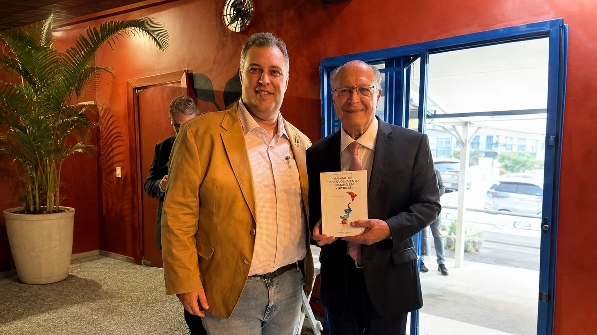

Pós-graduação · Especialização lato sensu
Pós-graduação em Sistemas Humanizados
Saúde Mental, Cultura Organizacional e Gestão de Riscos Psicossociais (NR-1)
Um estudo a fundo do ser humano, aplicado dentro de qualquer instituição. Para quem vai reescrever regras, políticas e processos a partir de como as pessoas realmente funcionam.
Certificação pela FACEO - Faculdade Centro Oeste, instituição credenciada pelo MEC.
Eduardo Casarotto, criador da metodologia



Sistemas Humanizados · Humanização 2.0
Obra que fundamenta a metodologia do curso. Catalogada na Biblioteca do Senado Federal, onde é a única obra dedicada à humanização de sistemas organizacionais.
Por que essa competência virou urgente
Os afastamentos do trabalho por transtornos mentais no Brasil estão no maior patamar da série histórica.
Dados do Ministério da Previdência Social e de levantamento sobre notificações de burnout no período.
No mundo, a Gallup registra 41% dos trabalhadores relatando muito estresse diariamente. E a conta chega ao caixa: estimativas que cruzam dados da OMS e da Gallup apontam perda de cerca de um trilhão de dólares por ano em produtividade.
Dentro da empresa, o efeito é direto. Quem está em burnout é quase três vezes mais propenso a planejar sair no ano seguinte e 63% mais propenso a tirar licença médica. E substituir um profissional custa, em média, de 50% a 200% do salário anual dele.
É por isso que a NR-1 apareceu. E é por isso que existe demanda por quem saiba construir o sistema que ela exige.
Quero me matricularHumanizar não é ser bonzinho. É construir estrutura.
O ser humano tem um jeito de funcionar que não é opinião: tem necessidades que precisam ser atendidas, um cérebro com limites de atenção e de carga, um temperamento que não muda e uma personalidade construída ao longo da vida.
Um ambiente é humanizado quando as regras dele estão em harmonia com esse funcionamento. Quando estão em conflito com ele, adoece quem está lá dentro.
E isso não depende de boa intenção: depende do que está escrito nas regras.
Ser humano
Condição biológica. Todo atendente é humano.
Ser humanizado
Isso é estrutura. Um sistema automático que resolve seu problema em segundos, com clareza e sem enrolação, respeitou você. Um atendente que enrola, transfere de setor e devolve tudo para o começo, não respeitou.
A Humanização 2.0 não trata da presença do humano. Trata de colocar a estrutura em harmonia com o funcionamento humano.
O que agride e ninguém percebe
Ninguém precisa de método novo para saber que meta impossível faz mal, ou que gritar com funcionário é errado. Isso já é reconhecido como problema.
O trabalho difícil é enxergar o que agride e é considerado normal.
Promover o melhor técnico a gestor
Ele era excelente no que fazia. O cargo novo pede outra coisa, e ninguém perguntou se aquilo combinava com ele. A empresa perde um bom técnico e ganha um gestor infeliz. E todo mundo chama isso de reconhecimento.
O atendimento excelente que o cliente elogia
A nota sobe, a diretoria comemora. Ninguém mede o que aquilo custa de disponibilidade e desgaste de quem atende.
O ranking de desempenho na parede
Considerado motivação. É competição entre pessoas que precisam trabalhar juntas, e faz o cérebro medir posição em vez de resolver problema.
A política de porta aberta
Existe no papel, e ninguém usa. Porque quem usou uma vez ouviu falar disso na avaliação seguinte. A regra escrita diz uma coisa, a regra real diz outra.
O feedback uma vez por ano
O cérebro não muda com informação dada uma vez a cada doze meses. É o oposto de como o aprendizado funciona, e continua sendo o padrão.
A descrição de cargo genérica
Copiada de um modelo, cheia de verbos vagos. Sem ela, ninguém consegue saber se aquele cargo combina com aquela pessoa.
Nenhum desses exemplos vem de má intenção. Todos vêm de estruturas montadas sem considerar como o ser humano funciona, e por isso passam despercebidos por anos.
No fundo, o que está por trás é o mesmo em todos: orgulho e egoísmo virados regra, enfiados no jeito como as organizações foram sendo montadas ao longo da história. É a mesma coisa que adoece uma pessoa, funcionando numa escala maior.
E isso não é acusação a chefe nenhum. São estruturas que premiam a resposta orgulhosa e castigam a outra, de um jeito que até a pessoa mais bem-intencionada acaba entrando naquele padrão só para sobreviver ali dentro.
Um sistema humanizado é o conjunto de regras, políticas e processos escritos a partir de como o ser humano realmente funciona. É ele que a Humanização 2.0 constrói, e é exatamente o material que a NR-1 pede que exista e seja documentado.
Se depende do chefe ser bom, ninguém está protegido
Se o ambiente só é bom quando o chefe da vez é gente boa, ninguém está protegido de verdade. Está só com sorte. Empatia não fica na cadeira: ela vai embora junto com quem tinha.
Humanização 2.0 não é campanha de conscientização. É regra escrita, aplicada e conferida.
A proteção da pessoa não está em quem manda. Está na estrutura.
De ponta a ponta
Humanizar uma organização não é criar um programa. É reescrever tudo o que já existe nela a partir de como o ser humano de fato funciona.
Estes são os componentes de um sistema humanizado. Cada um é ensinado passo a passo no curso.
Estrutura e governança
- Governança humanizada
- Comitê de avaliação humanizado
- Comissão interna de prevenção e incentivo à humanização
- Estrutura e espaço físico humanizado
- Gestão do conhecimento humanizada
Gestão de pessoas
- Recursos humanos humanizado
- Recrutamento e seleção humanizados
- Descrição de cargo humanizada
- Plano de carreira humanizado
- Avaliação de desempenho humanizada
- A Terceira Competência no sistema de avaliação
- Setor de treinamento e desenvolvimento focado na Terceira Competência
- Gestão de benefícios e remuneração humanizada
- Programa de mentoria humanizado
- Cartilha de desligamento humanizado
Saúde mental e qualidade de vida
- Departamento de saúde mental corporativa
- Política de saúde e bem-estar humanizada
- Programa de suporte em crises pessoais humanizado
- Política de descompressão e qualidade de vida
- Política de conciliação entre trabalho e vida pessoal
- Pesquisa de clima humanizada
Comunicação e relação
- Manual de feedbacks humanizado
- Manuais de atendimento e comunicação humanizados
- Atendimento ao público e ao cliente humanizado
- Política de transparência na comunicação
- Política de transparência nos processos de promoção e carreira
Documentos normativos
- Manual de humanização de políticas internas
- Manual de valores, princípios e crenças humanizado
- Manual de personalidade humanizado
- Políticas de gestão de pessoas humanizadas
Alcance para fora da organização
- Inclusão humanizada
- Projetos sociais e apoio às famílias dos colaboradores
- Setores de compras e vendas humanizados
É por isso que a Humanização 2.0 age de ponta a ponta. Não há setor da organização que fique de fora.
Quero me matricularNão se reescreve uma norma sem entender o ser humano
Antes de falar de política interna, o curso estuda como uma pessoa se constrói e o que faz ela funcionar de um jeito ou de outro. É o que separa esta pós-graduação de um curso de gestão.
A psique
O aparelho psíquico: ego, self, superego, complexos, e tudo o que funciona sem a pessoa perceber.
A personalidade
Temperamento, caráter, identidade e couraça. O que já vem de nascença e o que é construído ao longo da vida.
As 51 necessidades humanas
São as mesmas em qualquer cultura, não importa a criação. Cada uma tem uma reserva que não pode secar nem transbordar, porque os dois extremos geram sintoma.
As faixas de evolução
Em que modo o cérebro de alguém está funcionando, e por que a mesma medida liberta uma equipe e bagunça outra. É o que evita o erro mais caro de uma consultoria: dar autonomia onde ainda era preciso dar proteção.
Orgulho e egoísmo
Os dois jeitos de funcionar que estão por trás da maior parte do adoecimento, tanto na pessoa quanto na empresa.
As virtudes
Não como valor moral, e sim como capacidade que se constrói. É a base da Terceira Competência.
Primeiro veio o método
O caminho normal é montar uma grade de aulas e transformar aquilo em pós-graduação. Aqui foi o contrário.
O método
Vinte anos de pesquisa sobre como o ser humano funciona, aplicados em consultórios, hospitais, empresas e presídios.
O livro
Tudo isso virou livro: Sistemas Humanizados · Humanização 2.0, catalogada na Biblioteca do Senado Federal.
O curso
A pós-graduação veio por último, para formar quem vai aplicar. O conteúdo do curso é o do livro, desenvolvido em aula.
Quem escreveu o livro é quem dá aula.
A NR-1 não criou a necessidade. Ela reconheceu o que já existia.
O trabalho já adoecia gente muito antes de qualquer norma existir. A mudança na NR-1 só tornou obrigatório encarar isso.
Desde 26 de maio de 2026, a fiscalização sobre riscos psicossociais tem poder de multar de verdade. Toda organização precisa identificar, avaliar, controlar e monitorar esses fatores no seu Programa de Gerenciamento de Riscos.
São quatro verbos, e todos falam do risco depois que ele já existe. Nenhum diz o que fazer para o risco não nascer.
A resposta que o mercado dá não resolve. A Universidade de Oxford comparou 46.336 trabalhadores de 233 empresas e olhou exatamente o que as empresas costumam contratar: treinamento de resiliência, meditação, aplicativos de bem-estar. Em vários indicadores, quem participou não estava melhor do que quem não participou. A conclusão do autor foi direta: é preciso mudar o local de trabalho, e não só o trabalhador.
E tem outro problema: um pacote de bem-estar não é um programa de gestão de risco. Ele não identifica o fator de risco, não mede o quanto as pessoas estão expostas e não documenta nada. Custa dinheiro e não gera o documento que o fiscal pede.
Um sistema humanizado é exatamente o material que a norma pede que exista e seja documentado.
O que o curso ensina
Os assuntos abaixo formam as 360 horas.
A base conceitual
O que é Humanização 2.0 e o que ela não é. Por que ação de humanização não é sistema humanizado. Os cinco filtros com que se avalia qualquer norma, processo ou política: virtuoso, sistêmico, 360°, flexibilidade e corresponsabilidade.
O funcionamento humano no trabalho
As 51 necessidades humanas aplicadas ao ambiente organizacional. Personalidade organizacional. As faixas de evolução organizacional e por que a mesma medida liberta uma equipe e desorganiza outra. Trabalho e funcionamento cerebral.
Saúde mental e riscos psicossociais
A NR-1 e o que ela exige na prática. Como identificar, avaliar, controlar e monitorar fatores de risco psicossocial. Como a documentação se produz a quatro mãos entre RH, segurança e medicina do trabalho.
A construção do sistema
As sete camadas onde a Humanização 2.0 fica gravada: descrição de cargo, políticas internas, fluxogramas, critérios de avaliação, política de valores, instrumentos de conflito e feedback, governança.
Liderança e governança
Liderança humanizada. Governança corporativa humanizada. A Terceira Competência: por que as organizações avaliam competência técnica e comportamental, e por que a competência moral precisa entrar formalmente na avaliação de desempenho, com peso sobre carreira e remuneração.
RH e pessoas
RH humanizado. Desenho de cargo. Recrutamento, integração e desligamento. Conflitos, feedback e atendimento ao público. Inclusão humanizada.
Ética, compliance e políticas
Políticas internas, código de conduta, compliance humanizado, ouvidoria. Como se escreve uma norma a partir do funcionamento humano.
A implantação
As quatro etapas em que um sistema humanizado se instala: estrutura, processos, gestão e asseguração. Por que a ordem entre elas não é escolha de gosto. Como conduzir o diagnóstico, com quem falar primeiro, e o que fazer quando o que a diretoria descreve não coincide com o que a equipe vive.
Contextos específicos
Humanização 2.0 na saúde. Humanização 2.0 no serviço público.
Como funciona
| Carga horária | 360 horas |
|---|---|
| Formato | Totalmente online, com aulas gravadas |
| Duração | De 4 a 12 meses, conforme o seu ritmo |
| Tira-dúvidas | Por escrito, abaixo da aula de cada módulo |
| Avaliação | Provas de múltipla escolha em plataforma controlada |
| Certificação | FACEO - Faculdade Centro Oeste, credenciada pelo MEC |
| Pré-requisito | Graduação completa em qualquer área |
As aulas são gravadas e o ritmo é seu. Quem tem disponibilidade conclui em quatro meses; quem precisa de mais tempo tem até doze.
Quero me matricularPara quem é
- Profissionais da saúdeOnde a palavra humanização já é do dia a dia, e onde a Humanização 2.0 leva o conceito da relação com o paciente para a estrutura da instituição inteira.
- Profissionais de RH e gestão de pessoasQue precisam construir o que a norma exige e não encontram método em lugar nenhum.
- Profissionais de segurança do trabalhoQue agora respondem por riscos psicossociais e vêm de formação voltada ao risco físico.
- Gestores e liderançasQue percebem que o problema da equipe não se resolve com mais treinamento.
- Consultores e psicólogos organizacionaisQue querem oferecer implantação, e não apenas diagnóstico.
- Servidores e gestores públicosPara quem o curso trata do contexto específico do serviço público.
- Advogados trabalhistas e profissionais de compliancePorque a NR-1 estabelece o nível de cuidado esperado que serve para medir a culpa do empregador em ações que envolvam adoecimento mental de origem ocupacional.
O pré-requisito é apenas graduação completa, em qualquer área.
Quero me matricularO que muda quando o ambiente para de produzir o dano
Durante um século, a segurança do trabalho tratou do corpo. A norma que obrigou a proteger a mão na prensa não deixou os patrões mais generosos. Ela tornou a mutilação inaceitável e, depois, rara.
Colocar o risco psicossocial na NR-1 faz com a mente o que já se fez com o corpo. Se o caminho for o mesmo, o adoecimento causado pelo trabalho deixa de ser um custo que se administra e passa a ser um dano que se evita.
Não é chute. É o que já aconteceu com a poeira, com o barulho e com o trabalho em altura, cada um no seu tempo.
Quem se forma aqui não aprende só a cumprir uma norma. Aprende a construir ambientes que param de adoecer as pessoas que passam a vida dentro deles.
O que costumam perguntar
O certificado é reconhecido pelo MEC?
Sim. O curso é certificado pela FACEO - Faculdade Centro Oeste, instituição credenciada pelo MEC. O nome oficial no MEC é Sistemas Humanizados: Saúde Mental, Cultura Organizacional e Gestão de Riscos Psicossociais (NR-1). Trata-se de pós-graduação lato sensu, na modalidade especialização.
Preciso ser da área de RH ou de saúde?
Não. O pré-requisito é graduação completa em qualquer área.
Em quanto tempo consigo concluir?
De 4 a 12 meses. Como as aulas são gravadas, o ritmo depende da sua disponibilidade.
Como funciona a avaliação?
Por provas de múltipla escolha, aplicadas em plataforma controlada.
Tem aula ao vivo?
Não. As aulas são gravadas, e o tira-dúvidas acontece por escrito abaixo da aula de cada módulo.
O curso habilita a implantar o sistema em uma organização?
Sim. A formação é voltada a tornar o profissional apto a implantar sistemas humanizados em instituições públicas ou privadas.
Conhecer a pós-graduação
O programa completo, o formato e os valores são apresentados em conversa direta.
Quero me matricularPara quem prefere examinar a metodologia antes, o livro Sistemas Humanizados · Humanização 2.0 reúne o conteúdo integral do curso.